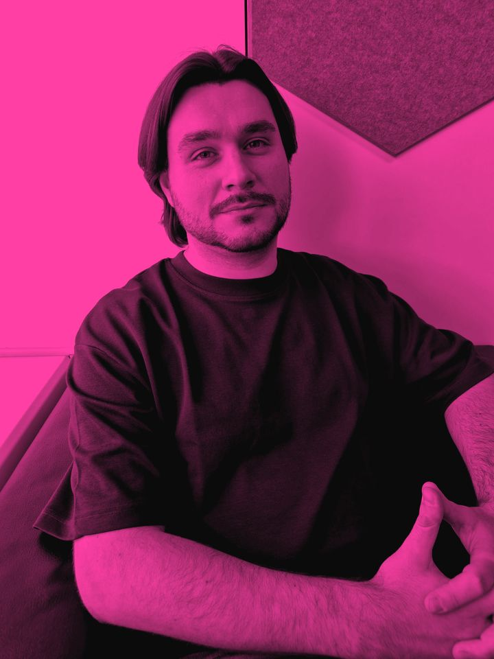
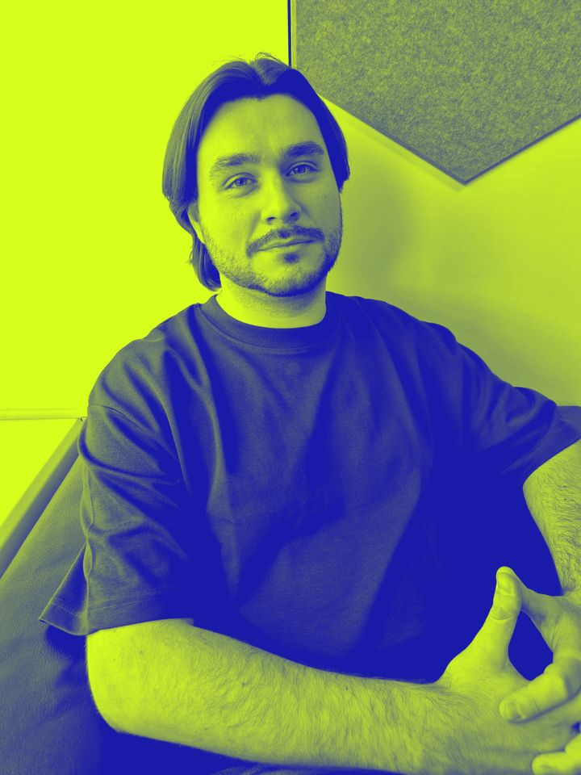
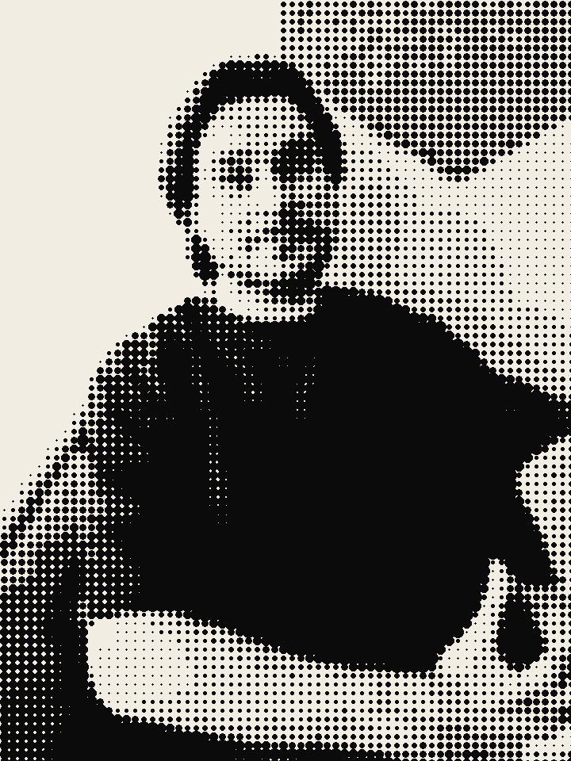
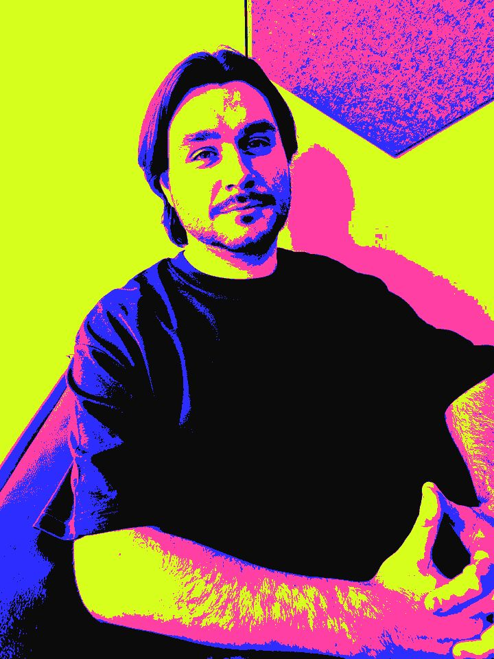

Nous utilisons des biscuits relationnels, façonnés à la main par un artisan du 11e et déposés avec bienveillance dans votre navigateur. En poursuivant votre navigation, vous acceptez que votre navigation soit une poursuite.
Ouverture le 31 növembre · Haut-Marais, Paris 3e · 14 m² (400 m² ressentis)
LA BÜTIQUE
Le premier cöncept-störe éphémère-sédentaire basé sur le share-care et le rebranding. Ni magasin, ni café, ni galerie, ni salle de concert. Un peu tout ça. Surtout rien de tout ça.
NÖUVEAU DEPUIS TOUJÖURS100 % RE-BRANDÉ✺ SAISON 0 (PERPÉTUELLE)
ÖUVERTURE LE 31 NÖVEMBRE✺ÉPHÉMÈRE-SÉDENTAIRE✺SHARE-CARE✺REBRANDING✺CÖNCERT✺ALIMENTATIÖN✺SECÖNDE MAIN✺ËVENTS✺FÉMINISME™ (PREMIUM)✺DEL-FINE™ : DISPONIBLE SUR TOUT LE SPECTRE✺IMPACT POSITIF (LÀ-BAS)✺π-DAY : ESCAPE-STORMING™ LE 14 MARS✺LISTE D'ATTENTE OUVERTE (COMPLÈTE)✺
§01
Le Cöncept™
La Bütique n'est pas un lieu. C'est une plateforme physique de co-expérience retail, pensée comme un safe-space transactionnel où l'on ne vient pas pour acheter, mais pour se laisser acheter par l'instant.
01
Éphémère‑Sédentaire
Nous sommes un pop-up permanent. Nous ouvrons pour une durée limitée, illimitée. Le bail est signé pour neuf ans, mais l'intention, elle, se renouvelle chaque matin. C'est ce que nous appelons le long-term ephemeral.
Bail 3-6-9 · Mood 24 h
02
Share‑Care
Vous prêtez un objet à une amie. Elle vous le rend. Avant La Bütique, ce geste n'avait pas de nom. Aujourd'hui, c'est du share-care, et c'est sur abonnement. Nous ne possédons rien : nous sécurisons le flux de la bienveillance matérielle.
Dès 120 € / mois
03
Rebranding
Rien n'est nouveau. Tout est neuf. Notre équipe de brand-shifters réencode des pratiques ancestrales pour le XXIe siècle. Faire la queue devient du co-waiting. Un banc devient une assise partagée. Vos clients deviennent une communauté.
Process breveté (en cours)
PAS UNE BOUTIQUE.PAS UN CAFÉ.PAS UNE GALERIE.PAS UN CONCEPT.UN MÉTA‑CÖNCEPT.
§02
Au Prögramme
Quatre verticales. Zéro silo. Une seule expérience, déclinée en touchpoints sensoriels fully-integrated.
01 — Cöncert
Une programmation live au format acoustic-silent : les artistes jouent, mais intérieurement. Le public est invité à pratiquer l'écoute active de ce qui n'est pas joué. Bouchons d'oreilles pre-loved fournis (supplément 8 €).
02 — Alimentatiön
Une offre food zéro-cuisine : produits bruts, non transformés, non préparés, parfois non livrés. Notre hydratation consciente est servie en glass-to-glass : vous rapportez le verre, nous vous le revendons. Le dimanche, food-sharing nomade : chacun apporte son repas et le mange sur l'herbe du square voisin.
03 — Secönde Main
Notre corner pre-loved curated sélectionne avec exigence des pièces ayant déjà eu une vie, souvent la nôtre. Le vide-grenier, enfin débarrassé de son grenier. Réparations proposées en upcycling assisté : vous apportez l'objet cassé, la colle et l'aiguille, nous apportons le regard.
04 — Ëvents
Des moments. Des activations. Des drops (ruptures de stock programmées). Des soirées de silent networking où l'on se tient côte à côte sans jamais s'adresser la parole, comme dans le métro, mais à 35 € l'entrée.
§03
La Cöllectiön
Saison 0 (perpétuelle). Les pièces ci-dessous sont disponibles, indisponibles, ou les deux. Visuels non contractuels. Livraison en click & walk : vous venez, vous repartez, le reste vous appartient.
Drop exclusifVisuel apaisant (non testé)
Nouveauté · Collection Neurö-inclusive
Del-Fine™
Le premier produit conçu par et pour les neuroatypiques*. Ni objet, ni service, ni ressenti : un spectre.
Stim-friendly
Hyperfocus-ready
Zèbre certifié
Spoon-saver
Sensory-safe**
Hyperfocus Mode™
Impossible de s'en détacher. Impossible aussi de savoir ce que c'est.
Stim-Luxe
À tapoter, faire tourner ou serrer. Ou non. Il s'adapte à vos besoins (nous n'avons pas vérifié).
Spoon Theory Edition
Livré avec 12 cuillères pre-loved dépareillées, pour gérer votre énergie avec élégance.
Unmasking Experience
Vous retirez le masque. Le packaging, lui, reste parfaitement opaque.
Body Doubling inclus
π reste assis à côté de vous pendant l'utilisation (supplément 314 € / h).
Info-dump officiel
Notice de 314 pages. Aucune ne précise la fonction du produit.
Fonctions exécutives externalisées
Nous avons décidé pour vous du moment de l'achat. C'était hier.
Coloris
Un seul : tout le spectre.
1 618 €Nombre d'or, pour les personnes sensibles aux patterns. Ou 3 × 539,33 € sans frais de compréhension.
* Comité de conception neuro-inclusif : π, qui s'est reconnu dans un carrousel sur les réseaux sociaux lors d'un séminaire à Deauville. ** Emballée dans 9 couches de papier de soie crissant, pour une ouverture lente et consciente.
§04
Agëndä
Programmation saisonnière curatée par π. Toutes les dates sont fermes, sauf modification. Arrivée conseillée 45 minutes avant le début de votre co-waiting.
14MARS3.14
Événement corporate · Jour ouvré (exceptionnellement un dimanche)
π-Day : Escape-Storming™
Le premier format d'idéation immersive à mi-chemin entre le brainstorming et l'escape game. Le principe est simple : on ne sort de la salle qu'après avoir produit un livrable. Aucune équipe n'est encore jamais sortie, ce que nous considérons comme un indicateur très encourageant.
Ordre du jour
Café d'onboardingIce-breaker : chaque participant pitche son personal branding en 31,4 secondes chrono.
Kick-offπ cadre le scope, aligne les parties prenantes et ferme la porte à clé. Au sens propre.
Brainstorming disruptifIl n'y a pas de mauvaises idées. Il n'y a que des idées non scalables.
Énigme n°1 : le SWOTLa clé de la salle est cachée dans une matrice SWOT. Indice : elle est dans les Threats.
Déjeuner apprenantWorking lunch : sandwich triangle, partage de best practices, KPI au dessert.
Atelier post-itOn challenge les learnings, on dérisque les quick wins et on sort du silo en restant dans le périmètre.
Énigme n°2 : le ROILe cadenas s'ouvre avec le ROI du projet. Le ROI n'est communiqué à personne.
Point d'étape agileStand-up meeting, assis. On remonte les irritants, on pousse les synergies, on fait un point sur le point.
Restitution du livrablePitch devant un jury composé de π. Les équipes sans livrable enchaînent sur un deuxième sprint.
Débrief & feedback 360°Ouverture de la porte. Remise des certificats d'employabilité. Annonce de la réorganisation.
Afterwork (non optionnel)Networking, échange de cartes de visite pre-loved, tarte au citron (π).
§05
Le Föndateur




πCoach certifié (par lui-même)Période rose · 1/4
π — Fondateur, coach en maïeutique
π ne se présente pas. π vous pose des questions, puis vous laisse y répondre seul·e, à 314 € la séance.
Formé à la maïeutique socratique en autodidacte, π a accompagné plus de 3,14159 entrepreneurs dans l'accouchement de leur vision. Il ne donne jamais de réponse : il aide les réponses à se donner elles-mêmes.
Avant La Bütique, π a mené une triple carrière d'excellence. Expert dans l'administration, il y a perfectionné l'art du formulaire en trois exemplaires et du rendez-vous non prioritaire. Enseignant, il a transmis à des générations d'élèves le goût de la question sans réponse. Conférencier, il intervient aujourd'hui sur scène, en visio et dans les espaces de coworking qui le sollicitent, ou non.
Il a ensuite été Head of Questions dans une start-up qu'il préfère ne pas nommer, puis Chief Uncertainty Officer en freelance. Il se définit aujourd'hui comme irrationnel, transcendant et infini.
Lorsqu'on lui demande ce que vend La Bütique, π répond : « Et vous, qu'êtes-vous venu·e chercher ? » La séance est alors facturée.
« Je ne vends rien. J'accompagne le besoin d'acheter jusqu'à sa naissance. »— π
Chez La Bütique, le féminisme n'est pas une option. C'est une ligne de produits. Nous croyons profondément à l'empowerment, pourvu qu'il soit premium, éditorialisé et compatible avec notre positionnement prix.
SORORITÉ · DISPONIBLE EN S, M ET CERCLE π
Engagement n°01
Parité 100 %
Notre comité de direction est strictement paritaire : il est composé de π. Une femme y sera nommée dès qu'un poste se libérera.
Engagement n°02
Taxe rose responsable
Nos produits « pour elle » sont rigoureusement identiques aux autres, majorés de 8 % au titre de l'engagement. La conscience a un coût.
Engagement n°03
Sororité Premium
Un réseau de femmes inspirantes qui s'entraident, sur cooptation, à partir de 890 € par an. La sororité, oui, mais entre personnes du même arrondissement.
Engagement n°04
Talents émergents
Toutes nos stagiaires sont des femmes, parce que nous croyons en elles. Tellement que nous refusons de dénaturer leur engagement par une rémunération.
Engagement n°05
Wall of Women
Un mur pre-loved couvert de citations de grandes femmes, toutes attribuées à π par souci de cohérence graphique.
Engagement n°06
Le 8 mars, toute l'année
Chaque 8 mars, −8 % sur toute la collection (hors nouveautés, hors Cercle π, hors collection).
Engagement n°07
Allié certifié
π a suivi une formation en ligne de 45 minutes. Il l'a ajoutée à son profil professionnel, rubrique « Compétences », juste avant « Maïeutique ».
Engagement n°08
Passez à l'action
Le meilleur moyen de soutenir la cause reste notre tote « Sororité » à 290 €.
« Je ne parle jamais à la place des femmes. Je parle avant. »— π, conférencier, allié certifié
Femmes au board
Bientôt
Engagement ressenti
100 %
Posts du 8 mars
14
Écart salarial
N/A*
* Aucune personne salariée.
§07
Impäct Pösitif™
Parce que consommer conscient ne suffit plus, La Bütique a lancé Ö-Rigines™, son programme d'impact régénératif là-bas. Là-bas, c'est un pays magnifique, authentique et ensoleillé, que nous ne nommerons pas, par respect pour sa pudeur et pour notre référencement.
Objectif : sauver là-bas3 % atteints
Frais de fonctionnement (97 %)
← Faites défiler l'impact →
🌿
Neutralité carbone
Nos 14 vols de repérage en jet privé ont été intégralement compensés par la plantation d'un arbre. Il figure désormais sur notre logo.
🌿
Terres protégées
Nous avons acquis 3 000 hectares afin de les préserver de leurs habitants. Ceux-ci ont été relogés avec bienveillance dans notre écolodge, en tant que personnel.
🌿
Upcycling solidaire
Nos invendus partent là-bas par conteneur entier. Sur place, ils ont créé un marché local, puis une décharge locale. Deux emplois indirects.
🌿
Savoir-faire ancestral
Des artisanes tissent notre Matière n°3 selon une technique millénaire, à un tarif lui aussi resté millénaire. Nous avons déposé leur motif traditionnel, pour le protéger.
🌿
Accès à l'eau
Nous avons foré un puits pour irriguer notre plantation d'avocats destinés à l'export. La communauté peut venir le contempler le dimanche.
🌿
Éducation
π y donne chaque année une conférence sur la sobriété heureuse, en français, devant les enfants du village, réunis pour l'occasion par l'école.
🌿
Gouvernance locale
Toutes les décisions concernant là-bas sont prises localement, par notre comité de pilotage du 3e arrondissement, situé à moins de 6 000 km.
🌿
Volontourisme premium
Partez une semaine construire une école. C'est toujours la même : elle est démontée après chaque séjour pour le groupe suivant. Photos incluses.
« Là-bas, j'ai compris que le vrai luxe, c'est la simplicité. Alors je l'ai importée. »— π, de retour de mission (classe affaires)
Arbres plantés
1
Photos de l'arbre
214
Hectares « protégés »
3 000
Habitants consultés
0
Rapport d'impact disponible sur demande, sous réserve de sa rédaction.
§08
La Bütique Army
Plus qu'un programme de fidélité : une communauté d'appartenance à intensité variable. Chacune de vos interactions sur ce site vous rapporte des Bütique Points, qui déterminent votre rang. Les points n'ont aucune valeur. C'est précisément ce qui les rend précieux.
Votre rang : Curieux·se · ◆ 0 Bütique Points
Prochain rang : Initié·e, encore 100 pts
Comment gagner des points ? En interagissant avec le site. Tout ce que vous faites est valorisé, sauf acheter.
0 pt
Curieux·se
Gratuit
Accès à la vitrine, depuis l'extérieur. Co-waiting côté ombre.
100 pts
Initié·e
314 € / an
Co-waiting côté rue ensoleillé. Droit de regarder la Del-Fine™ pendant 30 secondes.
300 pts
Ambassadeur·rice
1 618 € / an
Vous payez l'entrée, mais on vous salue. Co-waiting assis, sur assise partagée.
600 pts
Cercle π
Communiqué oralement
Accès aux pièces réservées. Co-waiting à l'intérieur. π vous regarde.
3 141 pts
Π (majuscule)
Inestimable
Niveau ultime. Personne ne l'a jamais atteint, pas même π.
Vos succès 0/17
Chasse au π : 0/7 Sept π sont cachés sur ce site. Ils sont discrets, comme π.
Votre carte de fidélité
Vos points sont gravés sur la carte au moment de sa génération. Pour la mettre à jour, régénérez-la. C'est gratuit, pour l'instant.
§09
Écosystème π
Une boutique ne suffit plus. La Bütique lance sa propre économie parallèle, décentralisée chez π.
Bücoin ₿ü
314,15 €
▲ +0,00 % depuis l'ouverture de cette page
Taux vibratoire du réseau : 432 Hz
Livre blanc (résumé)
Proof of Intention. Chaque bloc est validé par l'intention sincère d'un membre de l'Army.
Minage par méditation. Une minute de pleine conscience mine 0,0314 ₿ü (non versés).
528 Hz. Chaque Bücoin vibre à la fréquence de l'amour, mesurée par π à l'aide d'un diapason pre-loved.
Élévation vibratoire. Plus votre taux vibratoire est élevé, plus vos Bücoins sont alignés. Plus ils sont alignés, moins ils sont échangeables.
Halving tous les 3,14 ans, ou à chaque pleine lune, selon l'alignement.
Empreinte carbone intégralement compensée par l'arbre de là-bas.
Gouvernance décentralisée. Toutes les décisions sont prises par π.
Les Accords Bütiques Collection NFT
Cinq œuvres numériques uniques, chacune éditée à 500 exemplaires. Inspirées d'une sagesse toltèque ancestrale, rebrandée pour le retail.
I
Que ta parole soit impeccable
Et brandée. Chaque mot prononcé en boutique est une prise de parole de marque.
Unique · n°1/500 · 31,4 ₿ü
II
N'en fais jamais une affaire personnelle
Fais-en une affaire commerciale.
Unique · n°1/500 · 31,4 ₿ü
III
Ne fais pas de suppositions
Nous les faisons pour toi, et nous te les facturons.
Unique · n°1/500 · 31,4 ₿ü
IV
Fais toujours de ton mieux
Puis transforme-le en livrable.
Unique · n°1/500 · 31,4 ₿ü
V
Sois sceptique, mais achète
Le cinquième accord, révélé à π lors d'un séminaire à Deauville.
Unique · n°1/500 · 31,4 ₿ü
Les NFT sont stockés sur la blockchain Bücoin, elle-même hébergée dans notre intention.
§10
Pleine Cönscience™
Une méditation guidée de 60 secondes, conçue pour élever simultanément votre taux vibratoire et votre panier moyen.
Fermez les yeux. Enfin, gardez-les ouverts : il faut lire.
60 s
* Séance offerte, facturée 14 € à la fin. Chaque minute méditée mine 0,0314 ₿ü (non versés).
§11
Ïls en parlent
« On n'a pas compris. C'est donc forcément important. »
Ëpoque Magazine
« Je suis reparti les mains vides, et j'ai payé. Bouleversant. »
Le Courrier du Concept
« Le futur du retail ressemble étrangement à son passé, en plus cher. »
NÉØ Hebdo
« La file d'attente la plus inclusive de Paris. »
Urbaine & Brute
« ★★★★★ Je n'ai pas trouvé l'entrée. »
Maëlle, 34 ans, directrice artistique · avis vérifié
« Mon fils m'a demandé ce que c'était. Je lui ai répondu : La Bütique. Il a compris. »
Jean-Baptiste, membre de la communauté (2 visites)
§12
Liste d'Attente
L'accès à La Bütique est libre, sur liste d'attente. Les places sont attribuées par un algorithme propriétaire qui croise votre date d'inscription, votre alignement et la météo.
Candidature reçue.
N° 4 813
Merci, . Vous êtes inscrit·e sur la liste d'attente donnant accès à la liste d'attente. Votre position évolue en temps réel selon votre alignement.
Merci de ne pas nous recontacter : nous vous recontacterons lorsque vous serez prêt·e.
§13
Infös Pratiques
Adresse
Haut-Marais, Paris 3e. L'adresse exacte est communiquée oralement, à l'issue de votre co-waiting.
Horaires
Slow-retail : du mardi au samedi, en dehors des heures d'ouverture. Le dimanche, closed-store experience.
Accès
Click & walk. Entrée par la porte de côté (l'autre).
Paiement
CB, warm-cash, intention. Chèques-cadeaux La Bütique acceptés (en rupture).
Wi-Fi
Digital detox premium : zone blanche certifiée. Accès au réseau en option (9 € / 15 min).
Vestiaire
Consigne émotionnelle : déposez vos attentes à l'entrée, elles vous seront rendues à la sortie (4 €).
Dress code
Aucun. Nous verrons.
Fidélité
Programme d'engagement relationnel longue durée : au bout de dix visites, vous devenez ambassadeur·rice et payez l'entrée.
Cöntact
Joindre π
π ne répond ni au téléphone, ni aux e-mails, ni aux sollicitations directes. En revanche, il dispose d'un Linktree : un lien unique qui mène à plusieurs liens. Ce qui, en soi, est un concept.
Offrez à π un décaféiné matcha éco-responsable, gender-friendly et sourcé là-bas, servi tiède pour ne brusquer personne. 100 % de votre don sert à améliorer le monde (frais de fonctionnement : 97 %).